Files
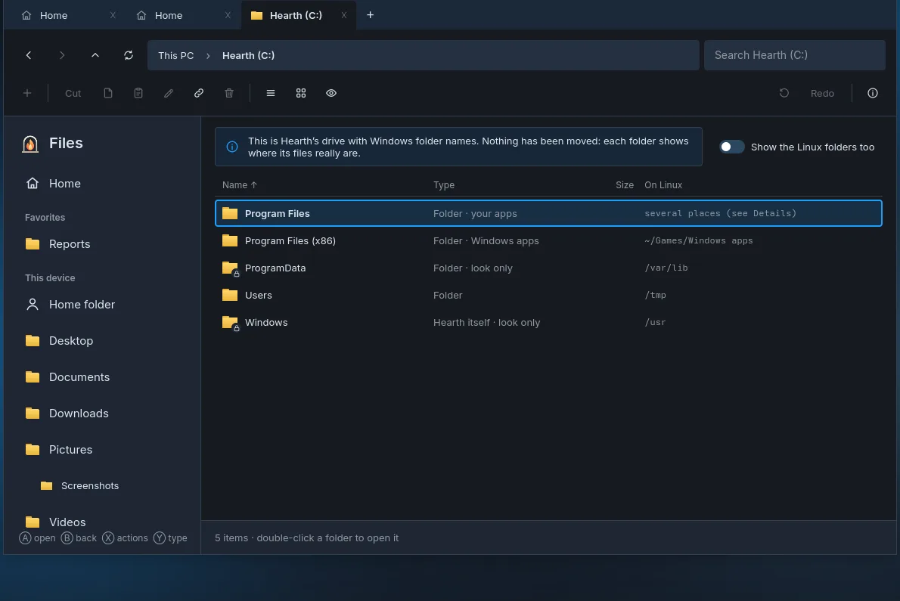
Hearth (C:) In 1.10
Program Files, Users and Windows, right where you'd look. Nothing on your PC is moved; it's just easier to find.
Turn it on and you're in Steam Game Mode, with your Steam, GOG, Epic and Battle.net games in one place. And when you want a desktop, it feels like Windows, only friendlier. Free, and built on Debian.
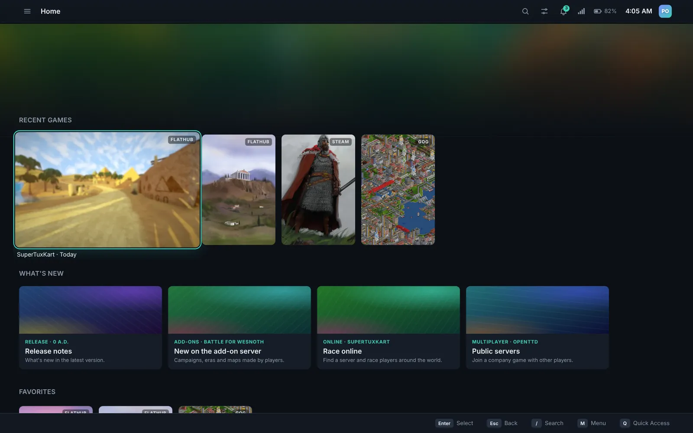
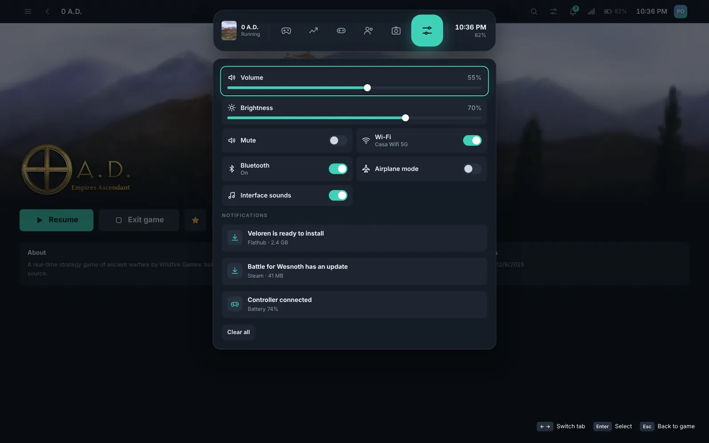
Free games that look great on Hearth
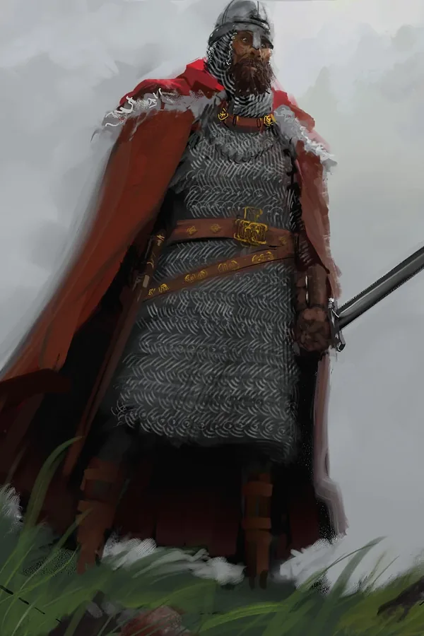
Battle for Wesnoth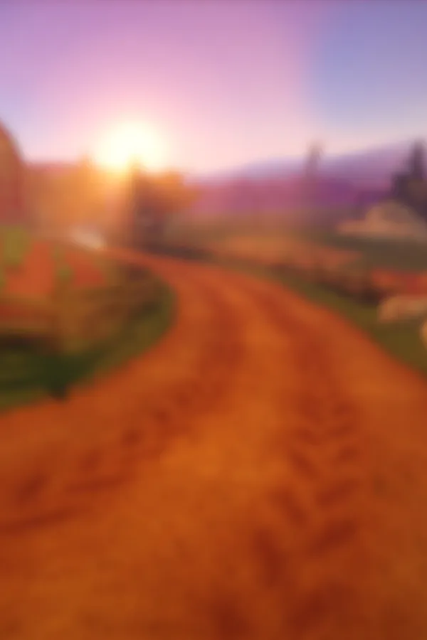
SuperTuxKart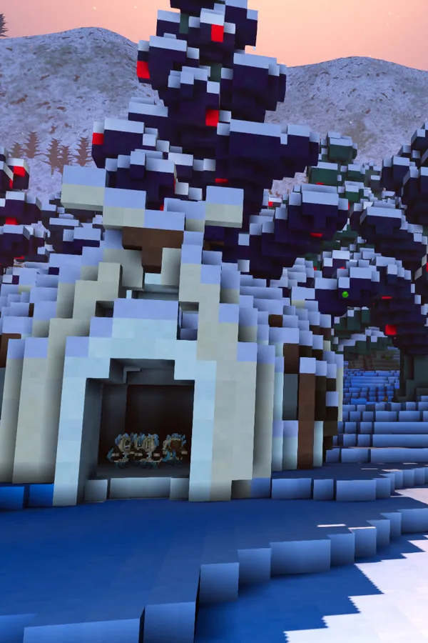
Veloren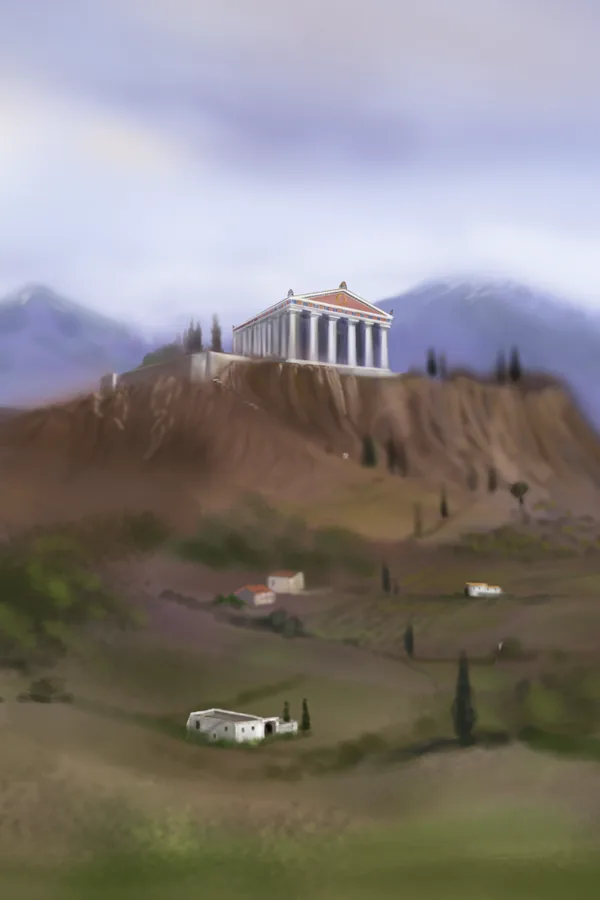
0 A.D.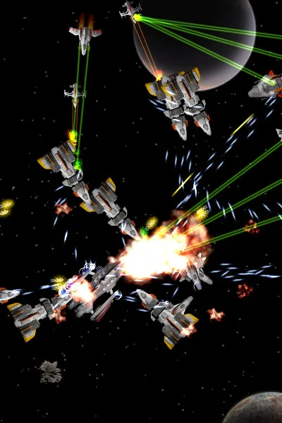
Endless Sky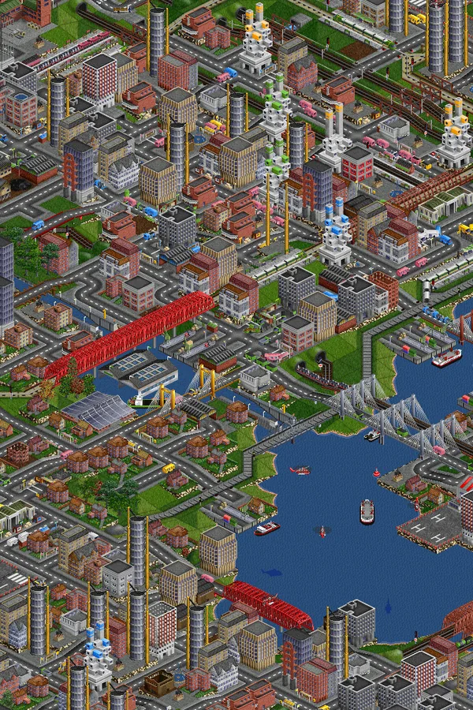
OpenTTDHearth OS starts in Valve's own Steam Game Mode, the one from the Steam Deck. Everything else you own comes along with it.
Valve's couch screens, the same as the Steam Deck: the library, the store, Quick Access and your controller, from the moment it turns on.
Hearth Sync puts your GOG, Epic and Battle.net games, emulators and recomps into Steam's library, with their pictures, so you never hunt for a launcher.
GE-Proton is built in: double-click a .exe or .msi and it opens. And it works fully offline, without Steam.
Hearth Mod Organizer keeps Mod Organizer 2's layout, and Wabbajack lists install with their downloads handled.
Recomps: native PC ports of console games, installed and kept up to date in their own tab in Hearth Games.
Minecraft, Valheim, Terraria and Palworld servers from Settings, so friends can join while you play.
Steam Game Mode, or Hearth's own. In Hearth's, Steam games still open in Steam Game Mode, and if Hearth's ever can't start, you land in Steam's instead. Change it any time in Settings › Gaming.
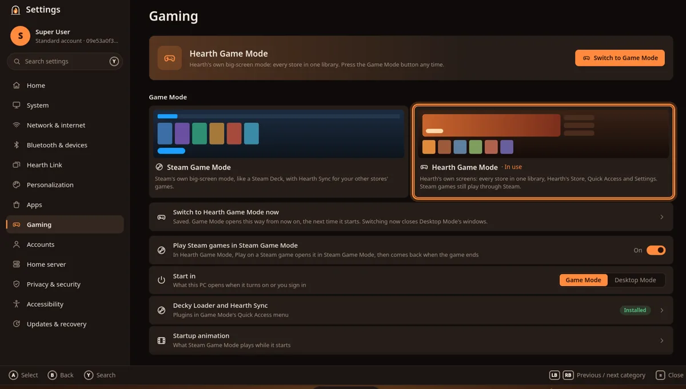
The apps you already know how to use, in plain words. Your files live on a Hearth (C:) drive, Windows programs open with a double-click, and Super+R and Super+X do what your hands expect.

Program Files, Users and Windows, right where you'd look. Nothing on your PC is moved; it's just easier to find.
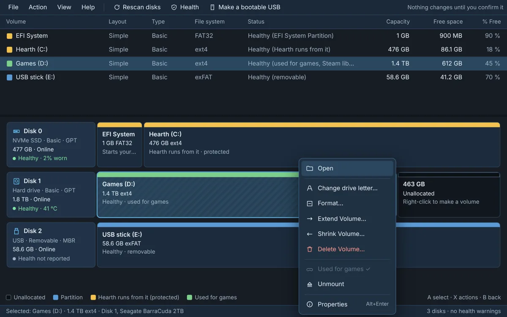
Format, shrink, grow and give drives a letter. Hearth's own drive is locked, so you can't break it by accident.
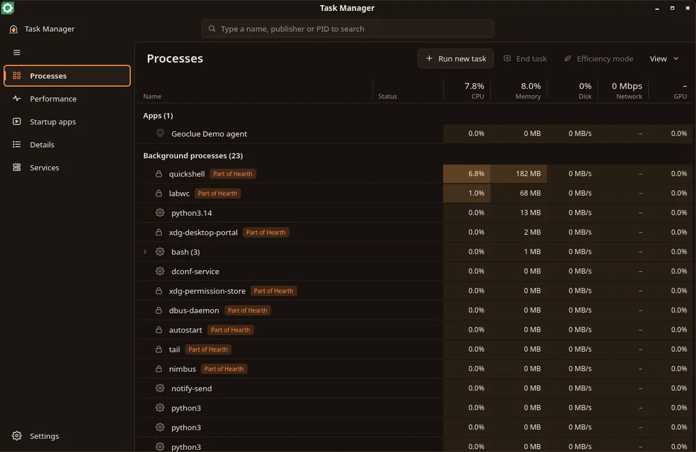
Processes, Performance, Startup apps and Services, the Windows 11 way. End a stuck game in two clicks.
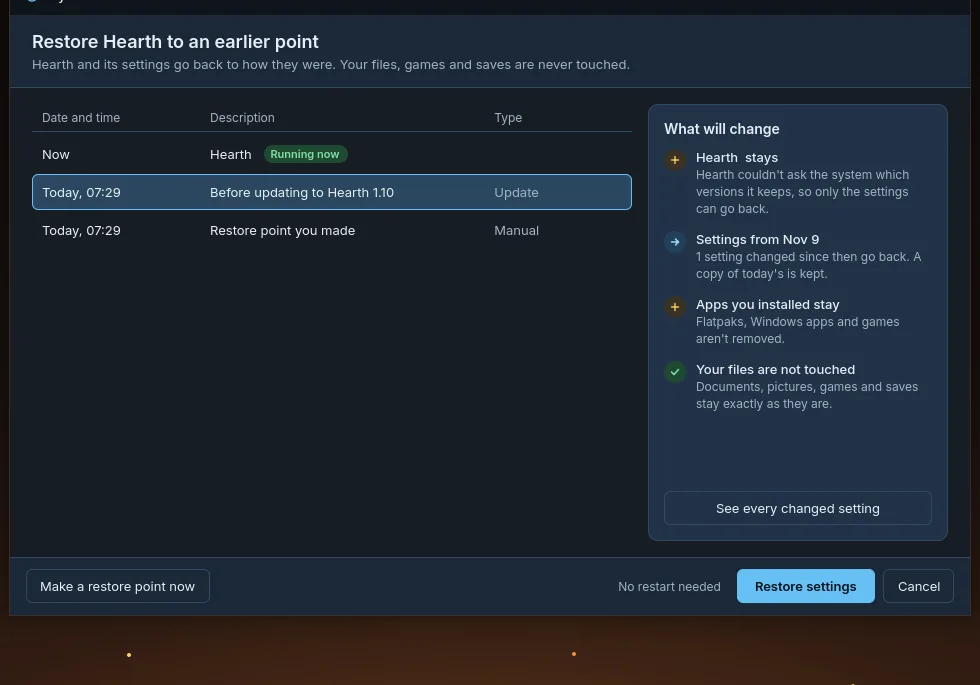
Broke something? Pick a point from before, see what will change, and go back. Your files and games are never touched.
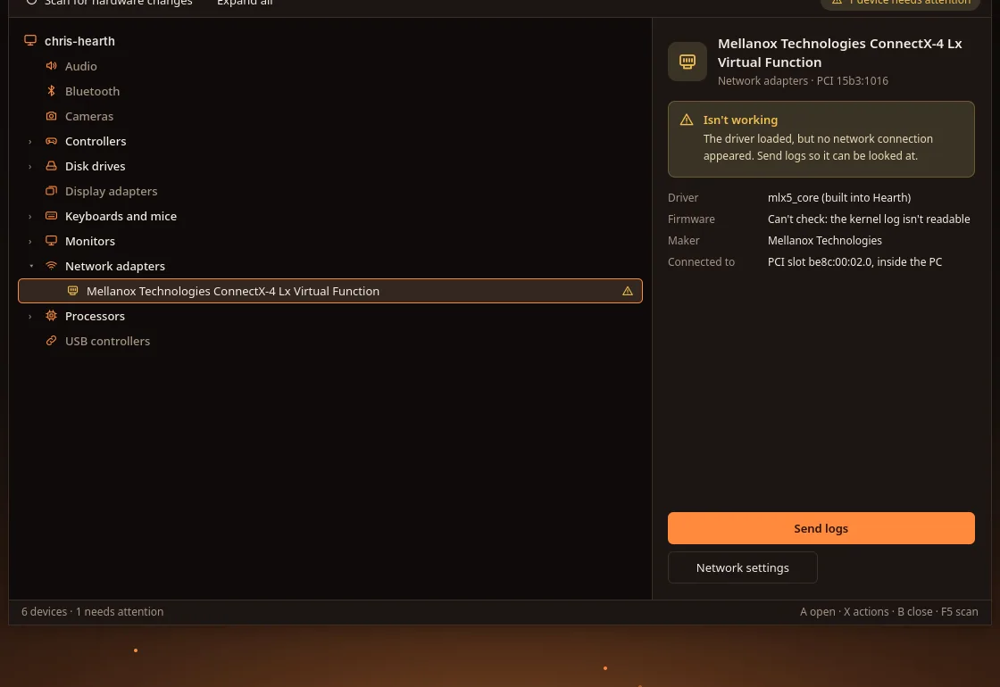
Super+R opens Run, and Windows commands like devmgmt.msc work. Super+X opens Windows' quick links, Resource Monitor included.
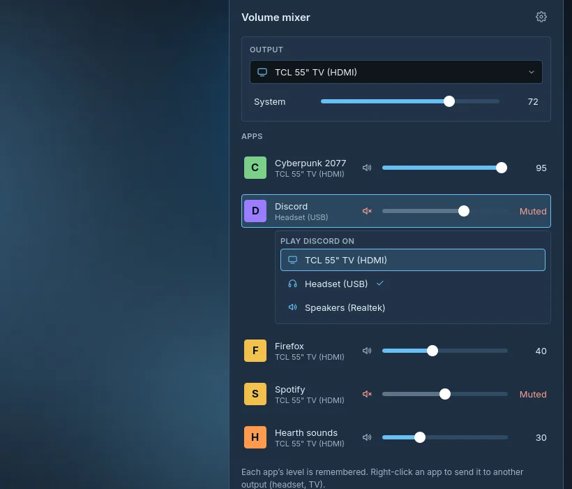
A slider for every app, and send Discord to your headset while the game plays on the TV.
Couch-first gaming, a desktop anyone coming from Windows can use on day one, and a PC that quietly runs your home in the background. Updates come out often, and every one can be undone.
Out now: 1.10
Next update
After that
Everything planned is in the release notes. Every update so far: What's new.
Every song from every Hearth OS video. The whole page moves to the beat, and each look dances its own way: embers for Hearth, neon for Gaming, a sunset grid for Synthwave.
It starts quietly the first time you click on the page. Pause it or turn it down from the bar at the top; it stays where you leave it.
Write the ISO to a USB stick of 16 GB or more (with Hearth Disks, Ventoy, Rufus or balenaEtcher), start your PC or handheld from it, and follow the screens. Installing needs a drive of 64 GB or more.
Hearth OS on Debian on the stick, so it installs without internet. It updates itself to the newest version after installing.
Download about 4.3 GB SHA-256 checksumKeep one in a drawer. It starts the previous version, reinstalls keeping your files, or copies them off.
Download about 5 GB SHA-256 checksumNvidia graphics and other ways to install are in Installing. Hearth OS is in beta: keep a backup of anything important.
Ember is Hearth for Windows: Hearth's Game Mode library and the Mantel desktop as a Windows shell, in place of Explorer or on top of it. Switch back to Explorer any time. Beta
In PowerShell:
irm https://raw.githubusercontent.com/Dragongamer9/hearth-os/main/tools/install-nimbus.ps1 | iexSteam Deck, ROG Ally, Legion Go and most x86-64 desktops and laptops with AMD, Intel or Nvidia (GTX 16 / RTX 20 and newer) graphics. For installing, a USB stick of 16 GB or more and a drive of 64 GB or more.
Steam Game Mode is Valve's Steam client, so you sign in to Steam there. Mantel, Hearth's desktop, works without one.
Yes. Updates keep the previous system in the boot menu; pick it, or use Settings › System › Updates. A version that fails to start twice in a row goes back by itself, and holding Volume Down while it starts opens Hearth Recovery. If nothing starts, the Recovery USB can start the previous version.
Anatase keeps working on its last version, but gets no more updates. To keep getting updates, install Hearth OS on Debian; games on a separate drive stay.
Yes. Hearth OS is free and open source under the GPL-3.0. Games you buy come from the stores as usual.
Send logs from Settings › System › Help & logs or with hearth-send-logs, and tell us what happened.